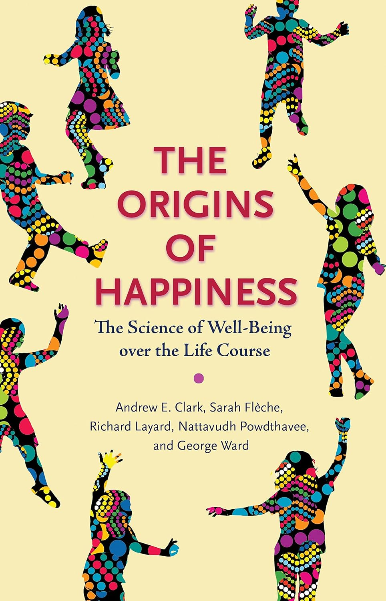
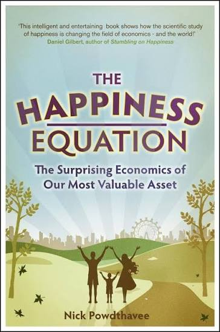

Happiness & well-being
Income, health, relationships, and life events—and what they tell us about the quality of life.
ECONOMICS · BEHAVIOURAL SCIENCE · WELL-BEING
Professor of Economics
Nanyang Technological University, Singapore
I study the economics of well-being: how our circumstances, choices, and beliefs shape the quality of our lives. My research spans happiness, inequality, social comparisons, and human judgment, including how large language models represent and evaluate people.
Download CV PDFGoogle ScholarRESEARCH
Income, health, relationships, and life events—and what they tell us about the quality of life.
Social comparisons, fairness, stereotypes, and the beliefs that shape judgments about others.
How large language models predict well-being and evaluate research, and where their judgments go wrong.
PUBLICATIONS
BOOKS
2018 · PRINCETON UNIVERSITY PRESS

The Science of Well-Being Over the Life Course
With Andrew E. Clark, Sarah Fleche, Richard Layard, and George Ward.
2010 · ICON BOOKS

The Surprising Economics of Our Most Valuable Asset
Nattavudh Powdthavee
TEACHING
My teaching at NTU has included the Economics of Well-being and the Economics of Education.
At Warwick Business School, I taught undergraduate, postgraduate, MBA, and executive courses covering well-being, behavioural economics, judgment and decision making, health economics, and applied microeconometrics.
Outstanding Contribution to Teaching, Warwick Business School: 2018–19, 2019–20, and 2021–22.
CONTACT
School of Social Sciences
Nanyang Technological University
Singapore